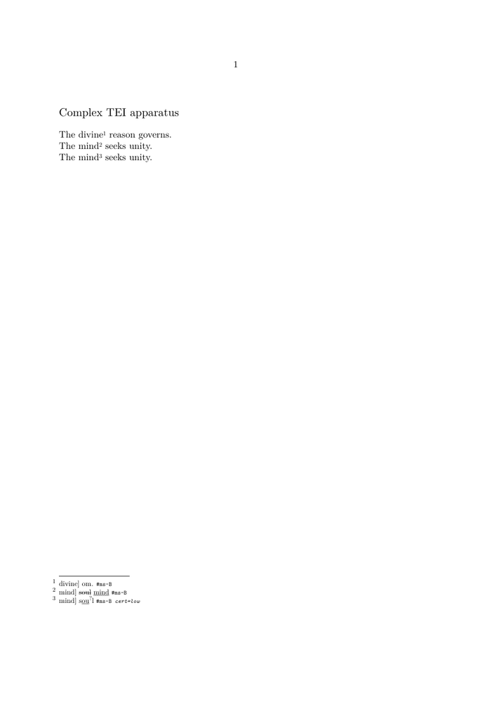

🚧 Under construction — This page and its subpages are currently being revised. Contributions are welcome: feel free to edit and improve them.
Guide 4 of 6 — Encoding complex textual variation in TEI
Previous: Guide 3 — Encoding a basic critical apparatus in TEI · Collection overview · Glossary · Next: Guide 5 — Processing TEI critical apparatus data with Lua
What you will build in this guide
Guide 3 established a basic apparatus relation:
app
├── lem
│ └── @wit
└── rdg
└── @wit
Guide 4 keeps that structure and learns to distinguish several kinds of complexity:
complex apparatus ├── presence / absence │ ├── empty lemma │ └── empty reading ├── documentary alteration │ └── subst │ ├── del │ └── add ├── editorial intervention │ └── @resp ├── uncertainty │ ├── @cert │ └── unclear ├── relationships between readings │ └── rdgGrp ├── local variation in word order └── unequal textual extent
The working file will combine eight teaching examples in one TEI document.
It will retain the variantEncoding declaration introduced in
Guide 3 and will end with a ConTeXt inspection test.
The goal is not to make the XML more elaborate. It is to preserve distinctions that matter to the scholarly model.
Contents
-
1
Encoding complex textual variation in TEI
-
1.1
Part I — Extend the basic apparatus model
- 1.1.1 1. Where this guide fits in the collection
- 1.1.2 2. Start from the simple apparatus model
-
1.1.3
3. Presence and absence
- 1.1.3.1 3.1. Not every absence means the same thing
- 1.1.3.2 3.2. Add an omission to the existing apparatus model
- 1.1.3.3 3.3. Printed omission is a rendering decision
- 1.1.3.4 3.4. Add the complementary case: additional text
- 1.1.3.5 3.5. Omission and addition depend partly on editorial perspective
- 1.1.3.6 3.6. Empty content is not missing markup
- 1.2 Part II — Distinguish evidence from intervention
- 1.3 Part III — Describe relations of greater complexity
-
1.4
Part IV — Complete, check, and inspect the model
- 1.4.1 11. The cumulative mental model
- 1.4.2 12. Build the complete Guide 4 TEI document
-
1.4.3
13. Check the model
-
1.4.3.1
13.1. Common conceptual and encoding errors
- 1.4.3.1.1 Apparatus abbreviation stored as text
- 1.4.3.1.2 Uncertainty encoded as absence
- 1.4.3.1.3 Conjecture assigned to a witness
- 1.4.3.1.4 Undeclared responsibility target
- 1.4.3.1.5 Deletion confused with omission
- 1.4.3.1.6 Flattening a substitution
- 1.4.3.1.7 Undocumented reading groups
- 1.4.3.1.8 Printed punctuation stored as reading content
- 1.4.3.1.9 Arbitrary segmentation
- 1.4.3.2 13.2. Check the model at several levels
-
1.4.3.1
13.1. Common conceptual and encoding errors
- 1.4.4 14. Inspect complex variants with ConTeXt
- 1.4.5 15. What you have built
- 1.4.6 16. Continue with Guide 5
- 1.5 Related pages
-
1.1
Part I — Extend the basic apparatus model
Guide 3 established the basic apparatus model and declared the parallel-segmentation method used by the teaching files. Guide 4 preserves both choices while extending the kinds of variation that can be represented.
The basic apparatus model is:
<app> <lem wit="#ms-A">mind</lem> <rdg wit="#ms-B">soul</rdg> </app>
Conceptually:
apparatus entry
├── lemma: mind
│ └── witness A
└── reading: soul
└── witness B
This works well for a straightforward substitution:
mind ↕ soul
Real textual traditions contain more complicated relations.
A witness may:
- omit text transmitted by other witnesses;
- contain additional text;
- preserve a correction or substitution;
- contain writing that is difficult to decipher;
- preserve a reading whose interpretation is uncertain;
- transmit the same words in another order;
- belong to a meaningful group of related readings;
- transmit a passage of different extent;
- differ from an editorial conjecture not transmitted by any witness.
Guide 4 therefore grows the model from:
SIMPLE VARIATION
│
▼
app
├── lem
└── rdg
into:
COMPLEX TEXTUAL VARIATION
│
├── absence / presence
│ ├── omission
│ └── addition
│
├── documentary alteration
│ ├── del
│ ├── add
│ └── subst
│
├── editorial interpretation
│ ├── conjecture
│ └── responsibility
│
├── uncertainty
│ ├── cert
│ └── unclear
│
├── relationships between readings
│ └── rdgGrp
│
├── changed order
│
└── unequal textual extent
Guiding principle.
Complex TEI encoding should make the editorial distinction clearer, not merely make the XML more elaborate.
Add structure only when it represents information that the edition actually needs to preserve.
Part I — Extend the basic apparatus model
1. Where this guide fits in the collection
The document has been growing step by step.
Guide 1 — document structure
TEI
├── teiHeader
└── text
└── body
└── p
Guide 2 — witness identities
TEI
├── teiHeader
│ └── sourceDesc
│ └── listWit
│ ├── A
│ ├── B
│ └── C
│
└── text
└── body
└── p
Guide 3 — basic textual relations
TEI
├── teiHeader
│ └── sourceDesc
│ └── listWit
│ ├── A
│ ├── B
│ └── C
│
└── text
└── body
└── p
└── app
├── lem
│ └── @wit
└── rdg
└── @wit
Guide 4 — enrich those relations
We now keep that structure and enlarge what an apparatus entry can say:
TEI
├── declarations
│ ├── witnesses
│ └── editorial responsibility ← NEW
│
└── text
└── body
└── apparatus entries
├── ordinary readings
├── empty readings ← NEW
├── documentary changes ← NEW
├── conjectures ← NEW
├── uncertainty ← NEW
├── grouped readings ← NEW
├── local word-order variants ← NEW
└── unequal textual spans ← NEW
The six-guide progression is:
Guide 1 STRUCTURE
│
▼
Guide 2 IDENTITIES
│
▼
Guide 3 BASIC RELATIONS
│
▼
Guide 4 COMPLEX RELATIONS ← YOU ARE HERE
│
▼
Guide 5 PROCESSING
│
▼
Guide 6 TYPOGRAPHY
How to read this diagram. Guides 1–3 established the document, witness identities, and basic reading relations. Guide 4 keeps all three layers and refines the meaning of variation. Guides 5 and 6 will process and typeset the same accumulated data.
Stage reached.
We already know how to encode a simple substitution.
Guide 4 does not replace that model. It extends it when the evidence requires more precise distinctions.
2. Start from the simple apparatus model
Suppose:
A mind B soul C understanding
A simple entry can represent all three textual forms:
<app> <lem wit="#ms-A">mind</lem> <rdg wit="#ms-B">soul</rdg> <rdg wit="#ed-C">understanding</rdg> </app>
Tree:
app
├── lem: mind
│ └── A
├── rdg: soul
│ └── B
└── rdg: understanding
└── C
Here every witness transmits some text.
Now compare:
CASE 1 A divine reason B reason C divine reason CASE 2 A reason B eternal reason C reason CASE 3 A reason and freedom B freedom and reason C reason and freedom
These involve different relations:
Case 1 absence Case 2 additional text Case 3 changed order
The basic apparatus remains our container:
app ├── lem └── rdg
but the meanings of its contents become richer.
Later examples also use values such as:
type="omission" type="addition" type="correction" type="conjecture" type="uncertain-reading" type="grouped-readings" type="local-word-order" type="unequal-extent"
Technical note. These @type values are the
classification vocabulary used by this tutorial. TEI permits
@type to classify apparatus entries, but it does not impose
this particular list. A real project should document the values it adopts,
especially when processing rules depend on them.
3. Presence and absence
3.1. Not every absence means the same thing
Before introducing an empty reading, distinguish several situations:
NO READABLE TEXT AT THIS POINT
│
├── genuine omission
│
├── physical loss
│
├── illegible writing
│
├── deleted text
│
├── editorial suppression
│
└── unknown / unrecorded data
These are not interchangeable.
The crucial distinction is:
EMPTY READING
≠
UNKNOWN READING
≠
ILLEGIBLE READING
≠
DELETED TEXT
How to read this diagram. These four states may all produce an apparatus that looks incomplete or difficult to read, but they make different scholarly claims. Guide 4 encodes the distinction rather than collapsing them into the same empty value.
| Situation | Meaning | Strategy introduced here |
|---|---|---|
| Omission | The witness transmits no text at this location | Explicitly empty <rdg/>
|
| Addition | One witness contains text absent from others | Empty lemma or reading for the witnesses without the text |
| Illegible writing | Writing exists but cannot be read securely | <unclear> or more detailed transcription
|
| Deleted text | Text existed and was cancelled | <del>
|
| Unknown data | The reading has not been established | Must not silently become an omission |
Do not infer absence too quickly.
An empty reading is a positive editorial statement: the witness is being said to support an empty textual value at this location.
It is not a substitute for missing information, illegibility, damage, or deletion.
3.2. Add an omission to the existing apparatus model
Suppose:
A The divine reason governs all. B The reason governs all. C The divine reason governs all.
At the variable point:
divine ├── A └── C empty └── B
The apparatus tree from Guide 3 is still present:
app ├── lem └── rdg
We now allow one branch to contain no textual content:
app
├── lem
│ ├── text: divine
│ └── witnesses: A C
│
└── rdg
├── text: EMPTY ← NEW
└── witness: B
TEI:
<app> <lem wit="#ms-A #ed-C">divine</lem> <rdg wit="#ms-B"/> </app>
The empty reading:
<rdg wit="#ms-B"/>
does not contain an invisible word.
It explicitly records an empty textual value.
3.3. Printed omission is a rendering decision
The TEI source contains:
<rdg wit="#ms-B"/>
A printed apparatus might produce:
divine] om. B
Thus:
TEI DATA PRINTED OUTPUT empty reading ───────────► om.
Do not encode:
<rdg wit="#ms-B">om.</rdg>
because om. is apparatus notation, not the transmitted
text.
3.4. Add the complementary case: additional text
Suppose:
A Reason governs all. B Eternal reason governs all. C Reason governs all.
At the variable location:
empty ├── A └── C eternal └── B
Our model becomes:
app
├── lem
│ ├── text: EMPTY ← NEW
│ └── witnesses: A C
│
└── rdg
├── text: eternal
└── witness: B
TEI:
<app> <lem wit="#ms-A #ed-C"/> <rdg wit="#ms-B">eternal</rdg> </app>
A possible printed form might be:
eternal add. B
but again:
add.
belongs to rendering.
3.5. Omission and addition depend partly on editorial perspective
Consider the same evidence:
A reason B eternal reason C reason
If the edited text reads:
reason
the relation may be described as:
B adds "eternal"
If the edited text reads:
eternal reason
the same evidence may be described as:
A and C omit "eternal"
The documentary evidence has not changed:
SAME EVIDENCE
│
+-------+-------+
│ │
▼ ▼
lemma without lemma with
"eternal" "eternal"
│ │
▼ ▼
addition in B omission in A C
How to read this diagram. The documentary evidence is unchanged. What changes is the relation between that evidence and the selected lemma. “Omission” and “addition” therefore describe an editorial comparison, not always an intrinsic property of one witness.
Editorial perspective matters.
“Omission” and “addition” describe a relationship between textual forms and the selected lemma.
They are not always permanent intrinsic properties of a witness.
3.6. Empty content is not missing markup
Explicit empty reading:
<app> <lem wit="#ms-A #ed-C">divine</lem> <rdg wit="#ms-B"/> </app>
means:
B supports an empty reading
while:
<app> <lem wit="#ms-A #ed-C">divine</lem> </app>
means only:
no alternative reading has been encoded here
The two structures make different claims.
Further reference.
For the editorial vocabulary of omission, addition, reading, and apparatus lemma, see the Glossary.
For empty lemmas and readings in a critical apparatus, consult the TEI P5 chapter Critical Apparatus. The examples in this guide continue to use the parallel-segmentation method declared in Guide 3.
Stage reached.
Our apparatus model can now distinguish textual presence from explicit textual absence.
The next step distinguishes absence from text that was physically written and then changed.
Part II — Distinguish evidence from intervention
4. Documentary alterations
A witness may preserve not merely a different reading, but visible evidence of revision.
Suppose a copyist first wrote:
soul
and then replaced it with:
mind
Two questions now appear:
TEXTUAL QUESTION
What reading should the edition associate with B?
│
▼
mind
DOCUMENTARY QUESTION
What happened on the manuscript page?
│
▼
soul written
│
▼
soul deleted
│
▼
mind added
These questions are related but not identical.
TEXTUAL EVIDENCE
│
+----------+----------+
│ │
▼ ▼
CRITICAL RELATION DOCUMENTARY HISTORY
│ │
app / lem / rdg del / add / subst
│ │
+----------+----------+
│
▼
TEI SOURCE
How to read this diagram. The critical apparatus asks which textual forms are transmitted and how they relate. Documentary markup can preserve what physically happened in a particular witness. Guide 4 combines the two only when the editorial purpose requires both kinds of information.
Two complementary levels. A critical apparatus models textual relationships. Documentary transcription can additionally model the physical history of a witness. Do not add documentary detail unless it serves the scholarly purpose of the edition.
4.1. Minimal textual encoding
If the edition needs only the resulting textual state:
<rdg wit="#ms-B">mind</rdg>
may be sufficient.
4.2. Preserve the documentary intervention
If the alteration itself matters:
<rdg wit="#ms-B">
<subst>
<del>soul</del>
<add>mind</add>
</subst>
</rdg>
The cumulative apparatus tree grows:
app
├── lem
│
└── rdg
├── witness: B
│
└── subst ← NEW
├── del ← NEW
│ └── soul
└── add ← NEW
└── mind
4.3. Deletion is not omission
A deletion says:
text existed
│
▼
it was cancelled
An omission says:
no textual content is transmitted at this apparatus location
Compare:
DELETION <del>soul</del> OMISSION <rdg wit="#ms-B"/>
Deletion is not omission.
Deleted text is documentary evidence that writing existed and was cancelled.
An empty reading represents textual absence at the collated location.
4.4. The
<add>
element
Added material may be represented as:
<add>mind</add>
In a fuller documentary project, additional metadata might describe:
- position;
- hand;
- responsibility;
- sequence;
- other physical circumstances.
This guide retains the basic structural distinction.
4.5. The
<subst>
element
A substitution connects a deletion and an addition belonging to the same intervention:
subst
├── del
│ └── soul
└── add
└── mind
That structure preserves more information than:
<rdg wit="#ms-B">mind</rdg>
because it records a process:
soul │ ▼ deleted │ ▼ mind │ ▼ added as replacement
4.6. Apparatus and documentary transcription answer different questions
| Critical-apparatus question | Documentary question |
|---|---|
| Which reading does B support? | What was written first? |
| How does B differ from A? | Was material deleted or overwritten? |
| Which form appears in the edited text? | Where was a correction placed? |
| Which witness siglum should appear? | Which hand made the change? |
Two complementary levels.
A critical apparatus models textual relationships.
A documentary transcription can additionally model the physical history of a witness.
Encode only the level of detail required by the editorial purpose.
Further reference.
For documentary additions, deletions, substitutions, and other physical
interventions in primary sources, see the TEI P5 chapter
Representation of Primary Sources
and the reference pages for
<del>,
<add>,
and
<subst>.
These structures document interventions in a source; they should not be used merely as typographical synonyms for apparatus abbreviations.
Stage reached.
Our apparatus can now distinguish:
absence
≠
written then deleted
≠
replacement by another form
5. Editorial conjecture and responsibility
So far, readings have been associated with textual witnesses.
But an editor may propose a reading transmitted by no witness.
5.1. Conjectural reading
Suppose all witnesses read:
A mild B mild C mild
but the editor argues that the text should read:
mind
This creates a different relationship:
apparatus entry
│
+------------+------------+
│ │
▼ ▼
editorial lemma transmitted reading
mind mild
│ │
▼ ▼
editor responsible A B C
It would be false to write:
<lem wit="#ms-A">mind</lem>
if A actually reads mild.
Instead:
<app> <lem resp="#editor">mind</lem> <rdg wit="#ms-A #ms-B #ed-C">mild</rdg> </app>
5.2. Add responsibility to the declaration branch
Until now the header contained witness identities:
teiHeader
└── sourceDesc
└── listWit
├── A
├── B
└── C
Guide 4 now adds another kind of identifiable object:
teiHeader
├── titleStmt
│ └── respStmt [xml:id="editor"] ← NEW
│
└── sourceDesc
└── listWit
├── A
├── B
└── C
For example:
<titleStmt>
<title>A teaching example of complex textual variation</title>
<respStmt xml:id="editor">
<resp>Editorial conjectures and apparatus encoding</resp>
<name>Example Editor</name>
</respStmt>
</titleStmt>
The conjecture can refer to it:
resp="#editor"
│
▼
find xml:id="editor"
│
▼
responsibility statement
│
▼
Example Editor
5.3. Witness support and responsibility are different relations
@wit │ └── Which textual witnesses support this reading? @resp │ └── Who is responsible for this editorial claim?
| Attribute | Question | Example |
|---|---|---|
@wit
|
Which witnesses support the reading? | wit="#ms-A #ms-B"
|
@resp
|
Who is responsible for an editorial intervention? | resp="#editor"
|
Never manufacture witness support.
A conjecture may be adopted as the lemma without being transmitted by any manuscript.
Its editorial responsibility must not be represented as fictitious witness support.
Further reference.
For responsibility and the use of @resp, see the TEI P5
chapter
Certainty, Precision, and Responsibility
and the reference for
att.global.responsibility.
The tutorial points @resp to a declared
<respStmt>, keeping editorial responsibility distinct
from witness support.
6. Uncertainty and unclear text
A text may be uncertain for several reasons.
Before choosing markup, identify what is uncertain:
UNCERTAINTY
│
├── decipherment
├── whole-reading interpretation
├── witness attribution
├── editorial reconstruction
├── classification
└── degree of confidence
6.1. Whole-reading uncertainty
For example:
<rdg wit="#ms-B" cert="low">soul</rdg>
Tree:
rdg ├── text: soul ├── witness: B └── certainty: low ← NEW
The reading still exists.
The editor merely assigns a low degree of confidence to it.
6.2. Local uncertainty
If only part of the word is difficult to read:
<rdg wit="#ms-B"> s<unclear>ou</unclear>l </rdg>
Tree:
rdg ├── text: s ├── unclear ← NEW │ └── ou └── text: l
This is more precise than making the entire reading uncertain.
6.3. Whole reading versus local uncertainty
| Structure | Scope |
|---|---|
cert="low" on <rdg>
|
Reading as a whole |
<unclear>
|
Only the marked textual portion |
6.4. Uncertain is not empty
Compare:
EMPTY <rdg wit="#ms-B"/>
with:
UNCERTAIN <rdg wit="#ms-B" cert="low">soul</rdg>
and:
PARTLY UNCLEAR <rdg wit="#ms-B"> s<unclear>ou</unclear>l </rdg>
They express three different claims:
no text
≠
text interpreted with low certainty
≠
text partly difficult to decipher
Uncertainty is information, not absence.
Do not convert a doubtful or partly illegible reading into an empty reading merely because its interpretation is difficult.
Stage reached.
The apparatus can now state not only what a witness appears to read, but also the scope and degree of uncertainty in that interpretation.
Further reference.
For uncertainty attached to an intervention or interpretation, see the TEI P5 chapter Certainty, Precision, and Responsibility.
For locally difficult transcription, see
<unclear>.
The symbolic values used by @cert include
high, medium, low, and
unknown.
Part III — Describe relations of greater complexity
7. Related readings
So far, alternative readings have been siblings:
app ├── lem ├── rdg ├── rdg └── rdg
Sometimes the editor wants to state that some of those readings form a meaningful subgroup.
7.1. A group of readings
Suppose:
A mind B soul C understanding D intellect
The editor analyses:
substantive alternatives ├── soul └── understanding another reading └── intellect
TEI can make this classification explicit:
<app>
<lem wit="#ms-A">mind</lem>
<rdgGrp type="substantive">
<rdg wit="#ms-B">soul</rdg>
<rdg wit="#ed-C">understanding</rdg>
</rdgGrp>
<rdg wit="#ms-D">intellect</rdg>
</app>
Our tree grows again:
app
├── lem
│ └── mind
│
├── rdgGrp [type="substantive"] ← NEW
│ ├── rdg
│ │ └── soul
│ └── rdg
│ └── understanding
│
└── rdg
└── intellect
7.2. Grouping is an editorial claim
For example:
<rdgGrp type="orthographic"> <rdg wit="#ms-B">honour</rdg> <rdg wit="#ed-C">honor</rdg> </rdgGrp>
means:
honour
\
+── treated as orthographically related
/
honor
Another project might choose not to group them.
Classification is not automatically grouping. Two readings may both
be classified as substantive or orthographic without necessarily forming a
meaningful <rdgGrp>. The group should express an
editorially significant affinity between the readings.
Therefore:
GROUPING ≠ VISUAL CONVENIENCE
It is part of the project's analytical model.
Grouping is data.
A <rdgGrp> should express a documented editorial or
analytical relationship between readings, not merely make the XML or
printed output look tidier.
Technical note.
Values such as orthographic or substantive
should belong to a documented project vocabulary. The grouping category
is part of the encoding policy.
Further reference.
For groups of related readings, see
<rdgGrp>
and the TEI P5 chapter
Critical Apparatus.
A reading group should represent a meaningful analytical or genetic affinity, not merely a convenient visual grouping.
8. Local variation in word order
Suppose:
A reason and freedom B freedom and reason C reason and freedom
The variation is not simply one word replacing another.
It concerns sequence:
A C reason → and → freedom B freedom → and → reason
For a basic critical apparatus, the complete sequences can remain readings:
<app> <lem wit="#ms-A #ed-C">reason and freedom</lem> <rdg wit="#ms-B">freedom and reason</rdg> </app>
Tree:
app
├── lem
│ ├── reason and freedom
│ └── A C
└── rdg
├── freedom and reason
└── B
The model established in Guide 3 still works.
What changed is the extent and internal order of the textual forms.
Local word-order variation is not every kind of transposition. The example above compares two complete local sequences inside one apparatus entry. A transposition distributed across several textual locations, or one physically marked in a manuscript, may require a more elaborate encoding model.
8.1. Local word-order variation versus documentary or multi-location transposition
Distinguish:
TEXTUAL VARIATION
"What sequence does B transmit?"
versus
DOCUMENTARY TRANSPOSTION
"What marks or interventions on the physical page
indicate that text should be reordered?"
| Phenomenon | Question | Strategy here |
|---|---|---|
| Variant word order | What sequence does the witness transmit? | Encode the complete sequence in <rdg>
|
| Documentary transposition | What physical signs instruct reordering? | Requires more detailed primary-source transcription |
Further reference.
For more complex transpositions involving several locations, consult the
TEI P5 chapter
Critical Apparatus.
For physically marked reordering in primary-source transcription, see the
TEI mechanisms around <metamark>,
<listTranspose>, and
<transpose> in
Representation of Primary Sources.
9. Variants of unequal extent
A lemma and reading need not contain the same number of words.
Suppose:
A divine and eternal reason B reason C divine reason
The apparatus can simply record competing spans:
<app> <lem wit="#ms-A">divine and eternal reason</lem> <rdg wit="#ms-B">reason</rdg> <rdg wit="#ed-C">divine reason</rdg> </app>
Tree:
app
├── lem
│ └── divine and eternal reason
├── rdg
│ └── reason
└── rdg
└── divine reason
The relation is not:
word 1 ↔ word 1 word 2 ↔ word 2 word 3 ↔ word 3
It is:
COMPETING TEXTUAL SPANS
│
├── divine and eternal reason
├── reason
└── divine reason
9.1. Apparatus boundaries are editorial decisions
The same evidence could be encoded broadly:
<app> <lem wit="#ms-A">divine and eternal reason</lem> <rdg wit="#ms-B">reason</rdg> <rdg wit="#ed-C">divine reason</rdg> </app>
or analysed into narrower locations:
<app> <lem wit="#ms-A #ed-C">divine</lem> <rdg wit="#ms-B"/> </app> <app> <lem wit="#ms-A">and eternal</lem> <rdg wit="#ms-B #ed-C"/> </app> reason
These are not merely two formatting choices.
They express different analyses:
BROAD SEGMENTATION
[ divine and eternal reason ]
│
└── one variation unit
NARROW SEGMENTATION
[ divine ] [ and eternal ] reason
│ │
└─────────────┴── separate variation units
| Broad entry | Several narrow entries |
|---|---|
| Preserves phrase as one variation unit | Analyses component differences separately |
| Easier to understand as a larger relation | Easier to inspect component by component |
| May conceal internal agreement | May fragment a meaningful variation |
Segmentation is interpretation.
There is no universally correct apparatus boundary independent of editorial purpose.
A project should adopt a consistent segmentation policy and document it.
Further reference.
For the relation between apparatus entries and textual locations, including parallel segmentation and alternative linking methods, see the TEI P5 chapter Critical Apparatus.
The examples here use one project-level segmentation policy; another edition may choose broader or narrower variation units for scholarly reasons.
10. Combining several kinds of complexity
The categories introduced above are not mutually exclusive.
One apparatus entry can contain several kinds of information.
10.1. Conjecture plus uncertainty
For example:
<app>
<lem resp="#editor">mind</lem>
<rdg wit="#ms-A #ed-C">mild</rdg>
<rdg wit="#ms-B" cert="low">
m<unclear>il</unclear>d
</rdg>
</app>
The tree now contains several layers:
app
├── lem
│ ├── text: mind
│ └── responsibility: editor
│
├── rdg
│ ├── text: mild
│ └── witnesses: A C
│
└── rdg
├── witness: B
├── certainty: low
└── text
├── m
├── unclear
│ └── il
└── d
10.2. Reading plus documentary substitution
Another entry may contain:
<app>
<lem wit="#ms-A #ed-C">mind</lem>
<rdg wit="#ms-B">
<subst>
<del>soul</del>
<add>mind</add>
</subst>
</rdg>
</app>
Tree:
app
├── lem: mind
│ └── A C
│
└── rdg
├── B
└── subst
├── del: soul
└── add: mind
Complexity is not a goal in itself.
Do not add nested structures merely because TEI permits them.
Use them when they preserve distinctions that matter to the scholarly purpose of the edition.
Part IV — Complete, check, and inspect the model
11. The cumulative mental model
We can now place all additions to the Guide 3 apparatus model on one map.
BASIC APPARATUS
Guide 3
app
├── lem
│ └── @wit
└── rdg
└── @wit
│
│ Guide 4 adds
▼
COMPLEX APPARATUS
app
├── lem
│ ├── text or empty
│ ├── @wit
│ └── @resp
│
├── rdg
│ ├── text or empty
│ ├── @wit
│ ├── @resp
│ ├── @cert
│ ├── unclear
│ └── subst
│ ├── del
│ └── add
│
└── rdgGrp
└── related rdg elements
At the level of editorial questions:
WHAT EXISTS?
│
└── witnesses Guide 2
│
▼
WHAT DIFFERS?
│
└── lem / rdg Guide 3
│
▼
HOW DOES IT DIFFER?
│
├── empty / non-empty Guide 4
├── deleted / added
├── conjectured
├── uncertain
├── grouped
├── reordered
└── different extent
Stage reached.
The document no longer records merely that witnesses differ.
It can now record how they differ and which parts of that description come from documentary evidence, witness support, or editorial interpretation.
11.1. Compact reference to the structures introduced
| Phenomenon | Basic TEI structure |
|---|---|
| Omission | <rdg wit="#ms-B"/>
|
| Addition | Empty lemma plus non-empty reading |
| Deleted text | <del>...</del>
|
| Added documentary text | <add>...</add>
|
| Substitution | <subst> containing <del> and <add>
|
| Conjecture | Reading or lemma with @resp
|
| Low certainty | cert="low"
|
| Partly unclear text | <unclear>...</unclear>
|
| Related readings | <rdgGrp>...</rdgGrp>
|
| Changed word order | Complete reordered text in <rdg>
|
| Unequal extent | Complete competing textual spans |
12. Build the complete Guide 4 TEI document
The teaching file combines the phenomena introduced above.
Save it as:
tei-guide-04.xml
<?xml version="1.0" encoding="UTF-8"?>
<TEI xmlns="http://www.tei-c.org/ns/1.0">
<teiHeader>
<fileDesc>
<titleStmt>
<title>Complex textual variation in TEI</title>
<respStmt xml:id="editor">
<resp>Editorial conjectures and apparatus encoding</resp>
<name>Example Editor</name>
</respStmt>
</titleStmt>
<publicationStmt>
<p>Unpublished teaching example.</p>
</publicationStmt>
<sourceDesc>
<listWit>
<witness xml:id="ms-A" n="A">
The principal manuscript.
</witness>
<witness xml:id="ms-B" n="B">
A later manuscript containing omissions and corrections.
</witness>
<witness xml:id="ed-C" n="C">
An early printed edition.
</witness>
<witness xml:id="ms-D" n="D">
A manuscript containing several secondary readings.
</witness>
</listWit>
</sourceDesc>
</fileDesc>
<encodingDesc>
<variantEncoding
method="parallel-segmentation"
location="internal"/>
</encodingDesc>
</teiHeader>
<text>
<body>
<p xml:id="p1">The
<app type="omission">
<lem wit="#ms-A #ed-C #ms-D">divine</lem>
<rdg wit="#ms-B"/>
</app>
reason governs all.
</p>
<p xml:id="p2"><app type="addition"><lem
wit="#ms-A #ed-C #ms-D"/><rdg
wit="#ms-B">Eternal</rdg></app> reason seeks unity.</p>
<p xml:id="p3">The
<app type="correction">
<lem wit="#ms-A #ed-C #ms-D">mind</lem>
<rdg wit="#ms-B">
<subst>
<del>soul</del>
<add>mind</add>
</subst>
</rdg>
</app>
seeks unity.
</p>
<p xml:id="p4">The
<app type="conjecture">
<lem resp="#editor">mind</lem>
<rdg wit="#ms-A #ms-B #ed-C #ms-D">mild</rdg>
</app>
seeks unity.
</p>
<p xml:id="p5">The
<app type="uncertain-reading">
<lem wit="#ms-A #ed-C #ms-D">mind</lem>
<rdg wit="#ms-B" cert="low">
s<unclear>ou</unclear>l
</rdg>
</app>
seeks unity.
</p>
<p xml:id="p6">The
<app type="grouped-readings">
<lem wit="#ms-A">mind</lem>
<rdgGrp type="substantive">
<rdg wit="#ms-B">soul</rdg>
<rdg wit="#ed-C">understanding</rdg>
</rdgGrp>
<rdg wit="#ms-D">intellect</rdg>
</app>
seeks unity.
</p>
<p xml:id="p7">
<app type="local-word-order">
<lem wit="#ms-A #ed-C #ms-D">reason and freedom</lem>
<rdg wit="#ms-B">freedom and reason</rdg>
</app>
belong together.
</p>
<p xml:id="p8">
<app type="unequal-extent">
<lem wit="#ms-A">Divine and eternal reason</lem>
<rdg wit="#ms-B">Reason</rdg>
<rdg wit="#ed-C #ms-D">Divine reason</rdg>
</app>
governs all.
</p>
</body>
</text>
</TEI>
12.1. Eight examples, one progressively enriched model
| Paragraph | Phenomenon | Principal structure |
|---|---|---|
p1
|
Omission | Empty reading |
p2
|
Addition | Empty lemma |
p3
|
Correction | <subst>
|
p4
|
Conjecture | @resp
|
p5
|
Uncertainty | @cert and <unclear>
|
p6
|
Grouped readings | <rdgGrp>
|
p7
|
Local word-order variation | Complete reordered reading |
p8
|
Unequal extent | Competing spans of different lengths |
12.2. Read the complete TEI tree
TEI
├── teiHeader
│ └── fileDesc
│ ├── titleStmt
│ │ ├── title
│ │ └── respStmt [xml:id="editor"]
│ │
│ ├── publicationStmt
│ │
│ └── sourceDesc
│ └── listWit
│ ├── witness A
│ ├── witness B
│ ├── witness C
│ └── witness D
│
│ └── encodingDesc
│ └── variantEncoding
│ ├── method="parallel-segmentation"
│ └── location="internal"
│
└── text
└── body
│
├── p1
│ └── app [omission]
│ ├── lem: divine
│ └── rdg: EMPTY
│
├── p2
│ └── app [addition]
│ ├── lem: EMPTY
│ └── rdg: Eternal
│
├── p3
│ └── app [correction]
│ ├── lem: mind
│ └── rdg
│ └── subst
│ ├── del: soul
│ └── add: mind
│
├── p4
│ └── app [conjecture]
│ ├── lem: mind
│ │ └── resp: #editor
│ └── rdg: mild
│
├── p5
│ └── app [uncertain-reading]
│ ├── lem: mind
│ └── rdg
│ ├── cert: low
│ └── unclear: ou
│
├── p6
│ └── app [grouped-readings]
│ ├── lem: mind
│ ├── rdgGrp
│ │ ├── rdg: soul
│ │ └── rdg: understanding
│ └── rdg: intellect
│
├── p7
│ └── app [local-word-order]
│ ├── lem: reason and freedom
│ └── rdg: freedom and reason
│
└── p8
└── app [unequal-extent]
├── lem: Divine and eternal reason
├── rdg: Reason
└── rdg: Divine reason
How to read this diagram. The complete document now combines four layers accumulated across the series: witness declarations, a declared variant-encoding method, textual apparatus entries, and additional structures for documentary or editorial interpretation. The complexity is distributed according to function rather than collapsed into one preformatted apparatus string.
12.3. The same tree as editorial relations
p1
divine
├── A C D
└── EMPTY B
p2
EMPTY
├── A C D
└── Eternal B
p3
mind
├── A C D
└── B:
soul
↓ deleted
mind
↑ added
p4
mind
└── conjecture: editor
mild
└── A B C D
p5
mind
└── A C D
soul
└── B
├── cert: low
└── "ou" unclear
p6
mind
└── A
substantive group
├── soul B
└── understanding C
intellect
└── D
p7
reason and freedom
└── A C D
freedom and reason
└── B
p8
Divine and eternal reason
└── A
Reason
└── B
Divine reason
└── C D
How to read this diagram. This second view removes most XML syntax and shows the scholarly claims directly. Comparing it with the preceding tree is a useful check: every encoded structure should correspond to an editorial distinction that can be stated clearly in ordinary language.
Stage reached.
The TEI source can now distinguish several kinds of textual and editorial complexity without converting them into preformatted apparatus notation.
13. Check the model
13.1. Common conceptual and encoding errors
Apparatus abbreviation stored as text
Avoid:
<rdg wit="#ms-B">om.</rdg>
Prefer:
<rdg wit="#ms-B"/>
Uncertainty encoded as absence
Avoid an empty reading when writing exists but is uncertain.
Use, as appropriate:
<rdg wit="#ms-B" cert="low">soul</rdg>
or:
<rdg wit="#ms-B"> s<unclear>ou</unclear>l </rdg>
Conjecture assigned to a witness
Avoid:
<lem wit="#ms-A">mind</lem>
when A does not contain that reading.
Use:
<lem resp="#editor">mind</lem>
Undeclared responsibility target
Avoid:
resp="#unknown-editor"
unless:
xml:id="unknown-editor"
has actually been declared.
Deletion confused with omission
DELETION <del>soul</del> OMISSION <rdg wit="#ms-B"/>
They represent different evidence.
Flattening a substitution
Avoid:
<rdg wit="#ms-B">soul → mind</rdg>
Use:
<rdg wit="#ms-B">
<subst>
<del>soul</del>
<add>mind</add>
</subst>
</rdg>
Undocumented reading groups
Avoid an opaque category such as:
<rdgGrp type="group-1">
Prefer a documented analytical value where appropriate, and use a
<rdgGrp> only when the grouped readings actually have a
meaningful editorial affinity.
For example:
<rdgGrp type="orthographic">
or, where the project's analysis warrants the group:
<rdgGrp type="substantive">
The @type vocabulary itself should be documented at project
level.
Printed punctuation stored as reading content
Avoid:
<rdg wit="#ms-B">soul B;</rdg>
Use:
<rdg wit="#ms-B">soul</rdg>
Arbitrary segmentation
A series of syntactically valid apparatus entries may nevertheless misrepresent the editor's understanding of the variant.
Apparatus boundaries are part of the editorial model.
13.2. Check the model at several levels
The familiar validation model from Guides 1–3 now needs two additional questions.
complex apparatus entry
│
▼
+---------------------------+
| 1. XML WELL-FORMEDNESS |
| Are elements and |
| attributes syntactically |
| coherent? |
+---------------------------+
│
▼
+---------------------------+
| 2. TEI VALIDATION |
| Is the structure allowed |
| by the selected model? |
+---------------------------+
│
▼
+---------------------------+
| 3. REFERENCE INTEGRITY |
| Do @wit and @resp point |
| to declared objects? |
+---------------------------+
│
▼
+---------------------------+
| 4. PHENOMENON MODEL |
| Have omission, deletion, |
| uncertainty, etc. been |
| distinguished correctly? |
+---------------------------+
│
▼
+---------------------------+
| 5. EDITORIAL CORRECTNESS |
| Does this encoding |
| represent the evidence? |
+---------------------------+
How to read this diagram. The first two levels concern XML and TEI. The third checks whether references resolve. The fourth asks whether the chosen TEI structure models the right phenomenon. Only the fifth asks whether the scholarly claim itself is correct.
Further project-level questions include:
- Are similar phenomena treated consistently?
- Are apparatus boundaries meaningful?
- Is responsibility correctly attributed?
- Are grouping categories documented?
- Are witness assignments accurate?
Validation cannot choose the editorial model for you.
A structure may be legal TEI and still represent the evidence poorly.
The distinction between omission, deletion, conjecture, uncertainty, and grouping remains an editorial responsibility.
14. Inspect complex variants with ConTeXt
The following ConTeXt MWE is an inspection tool.
It is not intended to produce the final critical apparatus.
14.1. What the inspection should reveal
Before reading the code, the processing can be mapped as:
TEI SOURCE
│
▼
apparatus entry
│
+------------+------------+
│ │
▼ ▼
lem rdg
│ │
▼ ▼
edited text footnote
│
+------------+------------+
│ │ │
▼ ▼ ▼
empty subst uncertainty
│ │ │
▼ ▼ ▼
om. del/add visible mark
For addition:
empty lemma
│
▼
inspection representation
│
▼
∅
For raw witness support:
@wit │ ▼ #ms-B
Guide 5 will later resolve that identity systematically.
14.2. Save both files together
Use:
tei-guide-04.xml tei-guide-04.tex
in the same directory.
14.3. ConTeXt inspection source
Save:
tei-guide-04.tex
with:
\xmlregisterns
{tei}
{http://www.tei-c.org/ns/1.0}
\startxmlsetups xml:tei:document
\xmlsetsetup
{#1}
{tei:TEI|tei:text|tei:body}
{xml:tei:flush}
\xmlsetsetup
{#1}
{tei:teiHeader}
{xml:tei:ignore}
\xmlsetsetup
{#1}
{tei:p}
{xml:tei:paragraph}
\xmlsetsetup
{#1}
{tei:app}
{xml:tei:apparatus}
\xmlsetsetup
{#1}
{tei:lem}
{xml:tei:lemma}
\xmlsetsetup
{#1}
{tei:rdg}
{xml:tei:reading}
\xmlsetsetup
{#1}
{tei:rdgGrp}
{xml:tei:reading-group}
\xmlsetsetup
{#1}
{tei:subst}
{xml:tei:substitution}
\xmlsetsetup
{#1}
{tei:del}
{xml:tei:deletion}
\xmlsetsetup
{#1}
{tei:add}
{xml:tei:addition}
\xmlsetsetup
{#1}
{tei:unclear}
{xml:tei:unclear}
\stopxmlsetups
\xmlregistersetup{xml:tei:document}
\startxmlsetups xml:tei:flush
\xmlflush{#1}
\stopxmlsetups
\startxmlsetups xml:tei:ignore
% The TEI header is not typeset in this inspection test.
\stopxmlsetups
\startxmlsetups xml:tei:paragraph
\par
\dontleavehmode
\xmlflush{#1}
\par
\stopxmlsetups
\startxmlsetups xml:tei:lemma
\xmlflush{#1}
\stopxmlsetups
\startxmlsetups xml:tei:reading
\doifelse
{\xmltext{#1}}
{}
{om.}
{\xmlflush{#1}}
\space
\ttx{\xmlatt{#1}{wit}}
\doifsomething
{\xmlatt{#1}{cert}}
{\space
\itx{cert=\xmlatt{#1}{cert}}}
\quad
\stopxmlsetups
\startxmlsetups xml:tei:reading-group
\xmlflush{#1}
\stopxmlsetups
\startxmlsetups xml:tei:substitution
\xmlflush{#1}
\stopxmlsetups
\startxmlsetups xml:tei:deletion
\overstrike{\xmlflush{#1}}
\space
\stopxmlsetups
\startxmlsetups xml:tei:addition
\underbar{\xmlflush{#1}}
\stopxmlsetups
\startxmlsetups xml:tei:unclear
\underbar{\xmlflush{#1}}
\high{?}
\stopxmlsetups
\startxmlsetups xml:tei:apparatus
\xmlfirst{#1}{tei:lem}
\footnote
{\doifelse
{\xmlatt{#1}{type}}
{addition}
{\mathematics{\emptyset}}
{\xmlfirst{#1}{tei:lem}}}
\space
\xmlall{#1}{tei:rdg}}
\stopxmlsetups
\starttext
\subject{Complex TEI apparatus}
\xmlprocessfile
{tei}
{tei-guide-04.xml}
{}
\stoptext
Compile with:
context tei-guide-04.tex
14.4. What the test demonstrates
The edited text contains the lemmas selected from the apparatus entries.
The notes expose the underlying structures sufficiently to inspect them:
1. divine] om. #ms-B
2. ∅] Eternal #ms-B
3. mind] [deleted soul] [added mind] #ms-B
4. mind] mild #ms-A #ms-B #ed-C #ms-D
5. mind] soul #ms-B cert=low
6. mind] soul #ms-B;
understanding #ed-C;
intellect #ms-D
7. reason and freedom] freedom and reason #ms-B
8. Divine and eternal reason] Reason #ms-B;
Divine reason #ed-C #ms-D
The plain-text transcription above cannot reproduce every visual distinction produced by ConTeXt.

In the rendered result:
- deleted text is struck through;
- added text is underlined;
- uncertain characters are marked visibly;
- an empty lemma is represented by an empty-set symbol;
- raw witness identifiers are shown in a monospaced form.
14.5. Processing path
tei-guide-04.xml
│
▼
ConTeXt loads the TEI tree
│
▼
teiHeader is ignored
│
▼
each paragraph is processed
│
▼
each app selects its lemma
│
├────────────► edited text
│
▼
readings are processed
│
├── empty ─────────► om.
│
├── subst ─────────► del / add visible
│
├── unclear ───────► uncertainty visible
│
└── @wit ──────────► raw identifiers
│
▼
inspection notes
How to read this diagram. ConTeXt is still being used as an inspection layer rather than as the final apparatus compositor. It follows the TEI structures far enough to expose empty readings, documentary substitution, uncertainty, and raw witness identifiers; systematic resolution and normalization are deliberately deferred to Guide 5.
Technical note.
The symbols and typography used in this MWE are inspection devices.
For example, om., the empty-set symbol, underlining, and
overstriking make the encoded distinctions visible; they are not yet a
recommended final apparatus design.
14.6. Deliberate limitations
The inspection test does not yet:
- resolve XML witness identifiers into printed sigla;
- resolve editorial responsibility;
- construct location references;
- sort witnesses or readings;
- suppress redundant information;
- choose automatically between positive and negative apparatus styles;
- perform global validation;
- produce the final compact apparatus.
Those tasks belong to Guides 5 and 6.
Further reference.
For ConTeXt XML setups, element selection, attribute access, and flushing, see XML setup commands.
For the broader TEI → ConTeXt workflow, see TEI XML.
Guide 4 still uses ConTeXt primarily as an inspection layer. Systematic collection, normalization, and reference resolution begin in Guide 5.
14.7. Garden source-and-result demonstration
For Garden, a reduced set of complex variants can be embedded in a buffer so that source and result are displayed together. The local two-file MWE above remains the fuller test.
-
\startbuffer[complexvariants]
="http://www.tei-c.org/ns/1.0"> \stopbuffer \xmlregisterns {tei} {http://www.tei-c.org/ns/1.0} \startxmlsetups xml:tei:document \xmlsetsetup{#1}{tei:TEI|tei:text|tei:body}{xml:tei:flush} \xmlsetsetup{#1}{tei:teiHeader}{xml:tei:ignore} \xmlsetsetup{#1}{tei:p}{xml:tei:paragraph} \xmlsetsetup{#1}{tei:app}{xml:tei:apparatus} \xmlsetsetup{#1}{tei:lem}{xml:tei:lemma} \xmlsetsetup{#1}{tei:rdg}{xml:tei:reading} \xmlsetsetup{#1}{tei:subst}{xml:tei:substitution} \xmlsetsetup{#1}{tei:del}{xml:tei:deletion} \xmlsetsetup{#1}{tei:add}{xml:tei:addition} \xmlsetsetup{#1}{tei:unclear}{xml:tei:unclear} \stopxmlsetups \xmlregistersetup{xml:tei:document} \startxmlsetups xml:tei:flush \xmlflush{#1} \stopxmlsetups \startxmlsetups xml:tei:ignore \stopxmlsetups \startxmlsetups xml:tei:paragraph \par \dontleavehmode \xmlflush{#1} \par \stopxmlsetups \startxmlsetups xml:tei:lemma \xmlflush{#1} \stopxmlsetups \startxmlsetups xml:tei:reading \doifelse {\xmltext{#1}} {} {om.} {\xmlflush{#1}} \space \ttx{\xmlatt{#1}{wit}} \doifsomething {\xmlatt{#1}{cert}} {\space\itx{cert=\xmlatt{#1}{cert}}} \stopxmlsetups \startxmlsetups xml:tei:substitution \xmlflush{#1} \stopxmlsetups \startxmlsetups xml:tei:deletion \overstrike{\xmlflush{#1}} \space \stopxmlsetups \startxmlsetups xml:tei:addition \underbar{\xmlflush{#1}} \stopxmlsetups \startxmlsetups xml:tei:unclear \underbar{\xmlflush{#1}} \high{?} \stopxmlsetups \startxmlsetups xml:tei:apparatus \xmlfirst{#1}{tei:lem} \footnote {\xmlfirst{#1}{tei:lem}] \space \xmlall{#1}{tei:rdg}} \stopxmlsetups \starttext \subject{Complex TEI apparatus} \xmlprocessbuffer{tei}{complexvariants}{} \stoptextComplex textual variation ="editor"> Editorial conjecture Example Editor Teaching example.
="ms-A" n="A">Principal manuscript. ="ms-B" n="B">Variant manuscript. ="ed-C" n="C">Printed edition. ="parallel-segmentation" location="internal"/> The
="omission"> reason governs.="#ms-A #ed-C">divine ="#ms-B"/> The
="correction"> seeks unity.="#ms-A #ed-C">mind ="#ms-B"> soulmind The
="uncertain-reading"> seeks unity.="#ms-A #ed-C">mind ="#ms-B" cert="low">s ou l -

Technical note. The Garden example is deliberately smaller than the complete eight-case XML file. Its purpose is to demonstrate, in one self-contained block, that empty readings, documentary substitution, and local uncertainty can all be reached through ConTeXt XML setups.
15. What you have built
15.1. Guide 4 checklist
Before moving to Guide 5, verify:
| Check | Expected result |
|---|---|
| Variant encoding | parallel-segmentation, internal
|
Project @type vocabulary
|
Values are documented and used consistently |
| Omission | Explicit empty reading |
| Addition | Absence and added text represented separately |
| Deleted text | Not confused with omission |
| Substitution | Deletion and addition remain distinct |
| Conjecture | Responsibility recorded with @resp
|
| Responsibility target | Referenced object is declared |
| Uncertain reading | Not encoded as empty |
| Partial uncertainty | Marked locally |
| Reading groups | Grouping criterion is meaningful and documented |
| Local word-order variation | Actual textual sequence is preserved |
| Unequal extent | Complete competing spans are represented |
| Witness references | Every @wit resolves to a declaration
|
| Apparatus punctuation | Not embedded in reading text |
| Segmentation | Similar phenomena follow a consistent policy |
15.2. What Guides 1–4 have built
The same document has grown cumulatively.
Guide 1 — structure
TEI
├── teiHeader
└── text
└── p
Guide 2 — identities
TEI
├── teiHeader
│ └── listWit
│ ├── A
│ ├── B
│ └── C
│
└── text
└── p
Guide 3 — simple relations
TEI
├── teiHeader
│ └── listWit
│ ├── A
│ ├── B
│ └── C
│
└── text
└── p
└── app
├── lem
│ └── @wit
└── rdg
└── @wit
Guide 4 — complex relations
TEI
├── teiHeader
│ ├── responsibility
│ ├── witnesses
│ └── variantEncoding
│ └── parallel-segmentation / internal
│
└── text
└── complex apparatus
│
├── empty lemma / reading
│
├── subst
│ ├── del
│ └── add
│
├── @resp
│
├── @cert
├── unclear
│
├── rdgGrp
│
├── local word-order variants
│
└── unequal textual spans
The intellectual progression can now be summarized as:
DOCUMENT │ ▼ identify witnesses │ ▼ record differences │ ▼ classify those differences │ ▼ preserve editorial interpretation
Guide 4 complete.
The TEI document can now represent a useful range of complex textual phenomena while preserving the distinctions between witness evidence, documentary alteration, uncertainty, and editorial interpretation.
16. Continue with Guide 5
16.1. Why Guide 5 is the next step
Up to this point, we have mainly been adding structure to the TEI document.
That phase is now sufficiently developed.
The document may contain many entries such as:
app ├── lem ├── rdg ├── @wit ├── @resp ├── @cert ├── subst ├── unclear └── rdgGrp
The next problem is no longer:
How do I encode one more kind of variant?
It is:
How do I process all these structures consistently?
The transition is therefore:
GUIDES 1–4
BUILD STRUCTURED TEI DATA
│
▼
GUIDE 5
COLLECT + NORMALIZE + RESOLVE + VALIDATE
│
▼
GUIDE 6
TYPESET THE RESULT
How to read this diagram. Guides 1–4 primarily construct and refine the scholarly data model. Guide 5 changes the nature of the task: instead of adding one more encoding distinction, it begins processing the existing structures consistently across the document.
Guide 5 will use Lua to move from XML structures to reusable processing
records:
TEI apparatus entries
│
▼
collect
│
▼
normalize
│
▼
resolve references
│
▼
validate
│
▼
editorial data ready for ConTeXt
The next conceptual shift.
Guides 1–4 primarily construct the scholarly data model.
Guide 5 begins systematic processing of that model.
16.2. Next guide
The TEI source now contains enough structured information that consistent processing becomes necessary.
Guide 5 shows how Lua can:
- collect apparatus entries;
- normalize their contents;
- resolve witness and responsibility references;
- validate the resulting records;
- prepare structured editorial information for later ConTeXt typesetting.
- Next: Guide 5 — Processing TEI critical apparatus data with Lua
Guide 4 of 6 — Encoding complex textual variation in TEI
Previous: Guide 3 — Encoding a basic critical apparatus in TEI · Collection overview · Glossary · Next: Guide 5 — Processing TEI critical apparatus data with Lua
Related pages
- Building critical editions from TEI XML
- Understanding TEI documents for critical editions
- Declaring witnesses in TEI critical editions
- Encoding a basic critical apparatus in TEI
- Processing TEI critical apparatus data with Lua
- Glossary of terms used in the TEI XML critical edition guides
- TEI XML
- XML
- ConTeXt and Lua programming
- Processing XML with Lua
- Typesetting a TEI critical apparatus with ConTeXt